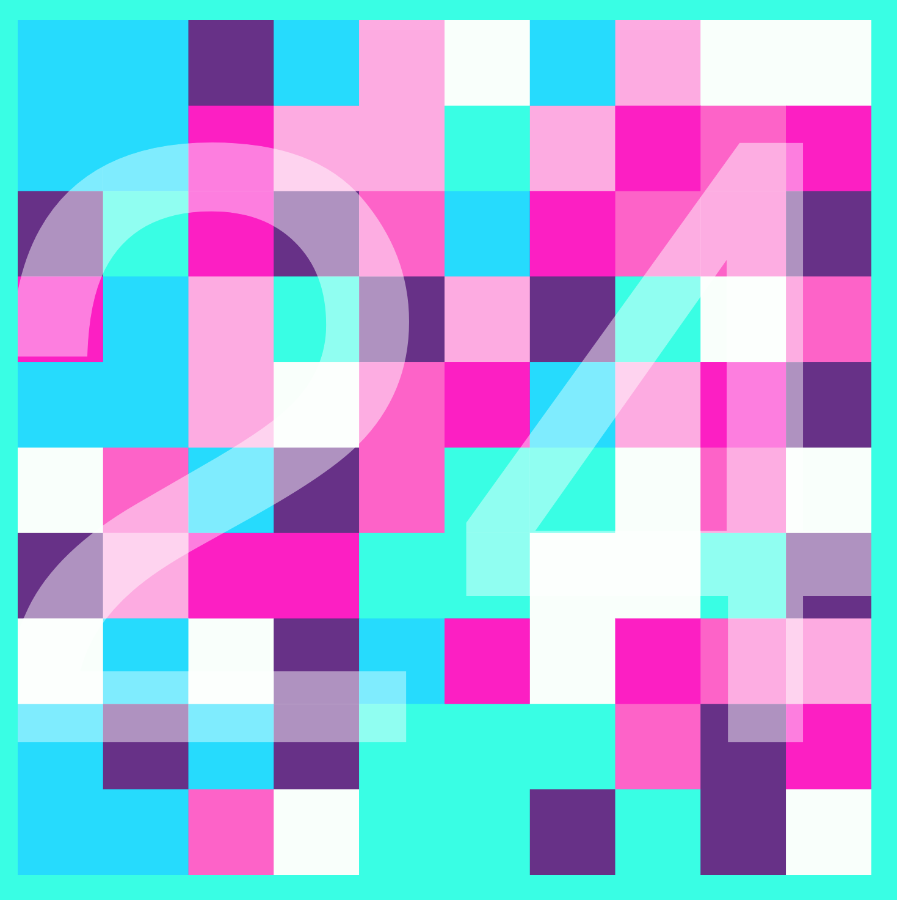

At the point of writing this, the main game of Flood It is working! To start implementing the game, I created just a basic board of square objects to represent the game. The game begins in the upper left corner, and which is the flood area. Each time you change the color of the flood area (by selecting any square on the board), each of the squares in the flood area will check its neighbors to see if they match the new color, and thus should be added to the fill area.
The algorithm is simple, and works nicely with recursion at a theoretical level. However, in progress it did not work as nicely because the call stack would get exceed even when the board was not all that large. This was by far the biggest hurdle I faced, and was easily the most important to fix. To account for this, I implemented an interative version of this same idea.
My next step in implementing the full game was to create three states: pre-game, game play, and post-game.
Pre-game represents the start page, and it allows you to select a level to begin playing at. One of the challenges I faced with this start page was that I knew I wanted to animate the squares in some way, but I wasn’t sure how to do so. I ended up making a “dancingSquares” animation which lowers the frame rate while it’s playing. The animation displays a different board each frame, using the same set of colors the whole time to create the effect that the squares themselves are moving around. Overlayed on top of the animation is a title graphic that I created in Illustrator. (note: the graphic is a little easier to read when the squares are actually moving!)
Game play has a few factors taken into account for each level: how many squares are on the board, how many colors are in play, and how many moves the player has to complete the level. Once an initial level has been selected, the board is generated via those 3 factors, and the game begins. When the user makes a move, a subtle animation plays to show how many allowed moves are remaining by flashing the number largely on the board then fading into invisibility.

If the player wins, then they are greeted by a fun dancing squares animation again, with a large “YOU WIN” and victorious music. If the player loses, then “GAME OVER” is displayed. In both scenarios, there are options to continue playing. If the player won, then they may move on to a harder level with a more squares, an additional color, and only a few more moves. If the player lost, then they may return back to the start page.
That is how the game works at this point. What I still would like to work on is animating the flooding of the squares in an interesting way. I still haven’t figured out a way to do so without completely disrupting the pace of the game.